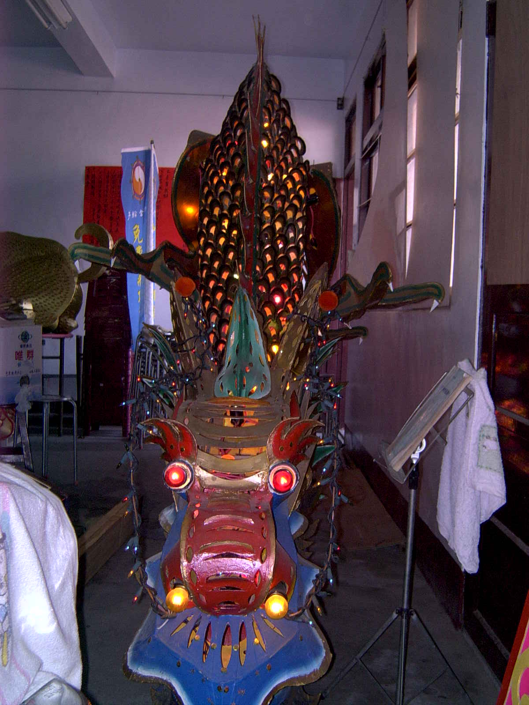

起源 在中華藝術裡，花燈是富於巧思，又具古色古香氣息的藝術品。花燈的製作是中國人所有，它的雕琢精巧，也唯中國人才能表現的淋漓盡致。
起源相傳兩千年前的中國佛教傳入，有一次月圓的時候，月光下隱約看到有天神
在翩翩起舞，有一年飄來一片雲，遮住天空，看不到天神，人們就拿著火
把來找天神， 雖然最後找不到但是人們卻也年年尋找天神，久而久之也成為一種習俗，慢慢延變就成為花燈─在台灣漢人登陸貿易時傳入台灣扎根，在近期有鹿港蔡長賢先生和 施秀雅女士，結合傳統花燈和紙雕藝術原料以厚紙板為主，創造出紙雕花燈，且保存比絲製花燈還要久也可以當擺飾收藏。


 在翩翩起舞，有一年飄來一片雲，遮住天空，看不到天神，人們就拿著火
在翩翩起舞，有一年飄來一片雲，遮住天空，看不到天神，人們就拿著火